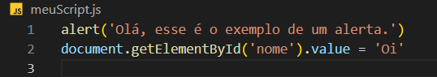

Em geral, usamos o JS para interagir com os elementos em HTML.
DOM (Document Object Model)-> todos os elementos ficam disponíveis no DOM e podem ser selecionador a partir da linguagem JS.
Inserindo Js no arquivo HTML
Adicione um arquivo Js utilizando 'src=""' dentro da tag 'script'. Ou escreva diretamente dentro da tag.
Obs.:Sempre utilizar a tag 'script' no final do código para não dar erro de precedência.
Comando Básicos
Alerta e DOM
Use 'alert(escreva o alerta aqui)' para criar uma notificação ao atualizar a página.
Use 'document.getElementById()'no arquivo js para acessar o DOM e atualizar itens do html.

Váriaveis
Use 'var' para variável. o Símbolo de '=' significa atribuição em JS.
Existem vários tipos de variáveis:
String (texto entre aspas);
Number (números inteiros e racionais);
Boolean (verdedeiro e falso).
obs.: O tipo da váriavel é atribuída automáticamente de acordo com seu valor.
Não é igual ao python que precisa informar seu tipo para o programa.
Modulos
O comando 'document.' é utilizado para acessar o itens do body.
*Abrindo um diálogo:
document.write()
*Acesso à consola de depuração:
console.log()